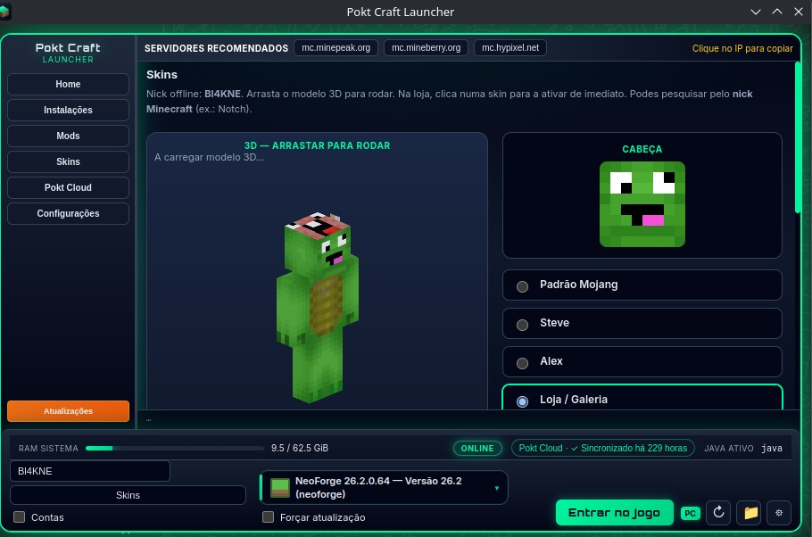
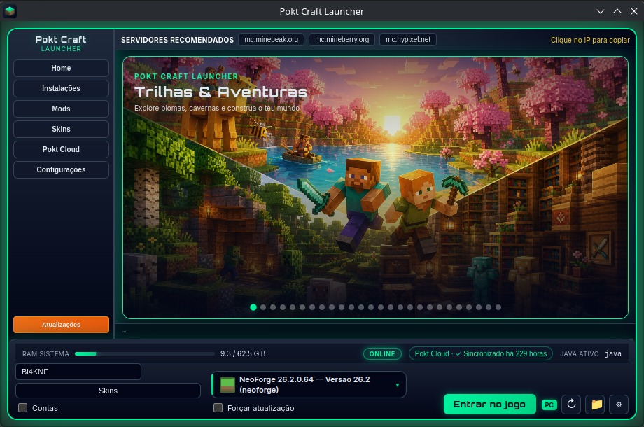
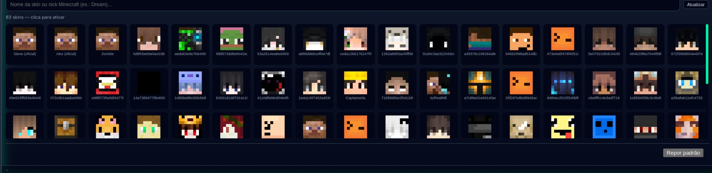
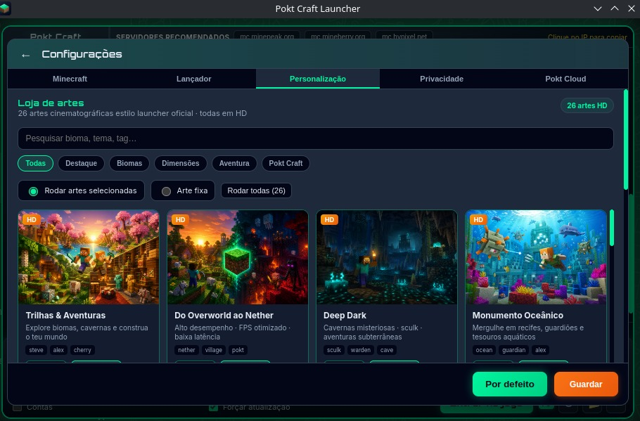

Instâncias limpas
Cada pack na sua pasta. Bibliotecas e assets oficiais, conferidos por hash.
Launcher de Minecraft Java com instâncias, mods e conta Microsoft. O Pokt Cloud grava os saves na conta Google que autorizares — não num servidor Pokt.
Executável portátil (~134 MB) para Windows 10/11 · execute Pokt-Craft-Launcher-0.1.0.exe (não precisa instalar)


Cada pack na sua pasta. Bibliotecas e assets oficiais, conferidos por hash.

Conta original para online, ou offline com skin. Google fica só para o Cloud.

RAM, Java e gráficos segundo o hardware. Podes jogar se o Drive estiver fora.
Um único ficheiro .exe portátil com o Pokt Craft Launcher completo. Abre direto no Windows — sem ZIP e sem instalador.
Sincroniza saves/ para PoktCraft/ no Drive. Pedimos só
drive.file — ficheiros que a app criar — mais o e-mail da conta ligada.
Minecraft é marca da Mojang AB / Microsoft. Google Drive é marca da Google LLC. Pokt Craft Launcher não é afiliado a Mojang, Microsoft ou Google.